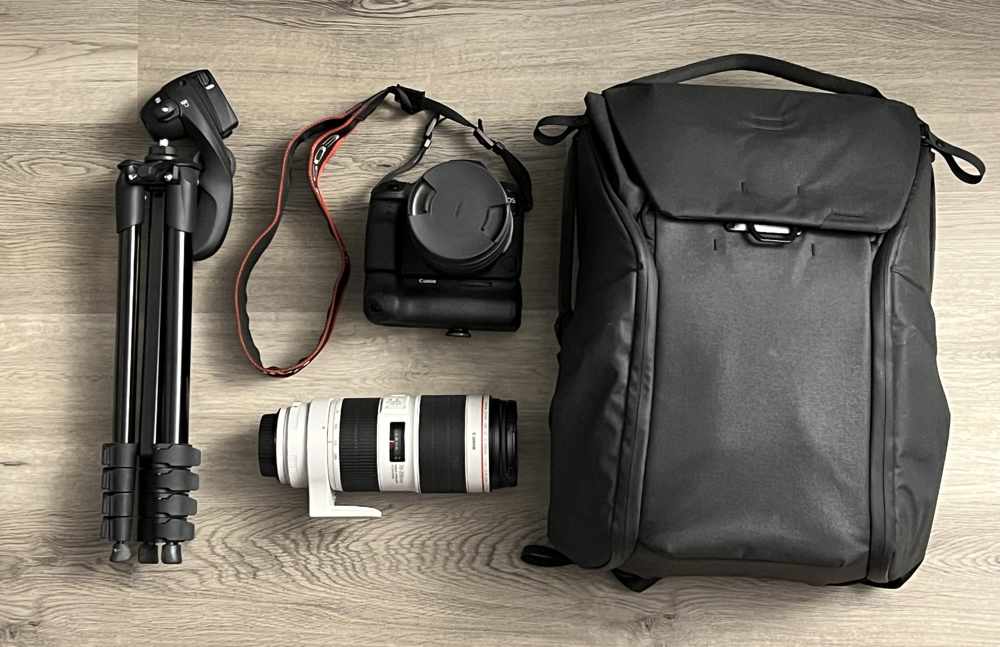

Hi there! I am a Southern California local, and I've been doing automotive photography since 2020. You'll often find me at local cars & coffees, as well as brand-specific enthusiast club events such as SoCal Quattro and Audi Club North America. My focus is capturing the diversity in the car community and the love for all things automotive.
I have a simple yet tried and true setup for my photography. Here is a list of my go-to gadgets and tools that I bring around on the go whenever I am photographing cars.
